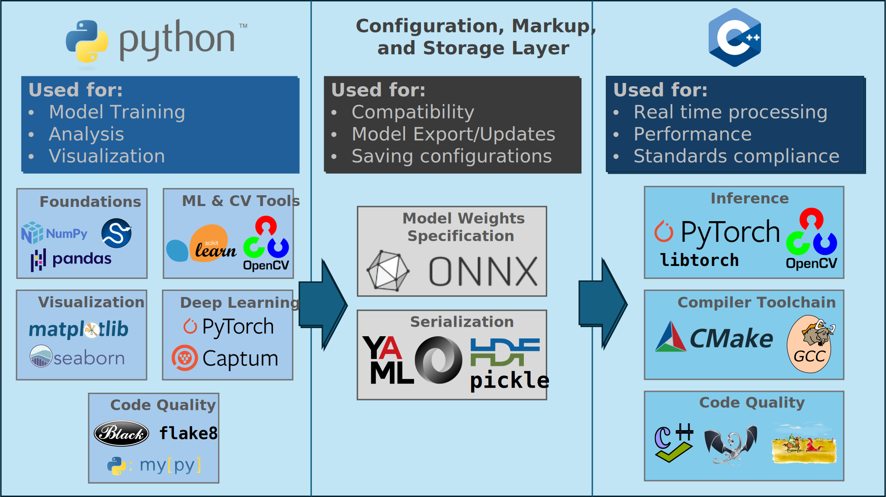

<!doctype html>
<html lang="en">

<head>
	<meta charset="utf-8">

	<title>reveal.js - Markdown Example</title>

	<link rel="stylesheet" href="./dist/reveal.css">
	<link rel="stylesheet" href="./dist/theme/black.css" id="theme">

	<link rel="stylesheet" href="./plugin/highlight/monokai.css">
</head>

<body>

	<div class="reveal">

		<div class="slides">

			<!-- Slides are separated by three dashes (the default) -->
			<section data-markdown data-separator="^\n----\n$" data-separator-vertical="^\n--\n$">
				<script type="text/template">
					## Class 3: Software Tools and Practices
					---
					

					----

					## Toolchain for this Class
					---
					

					----

					## Python
					---
					* Used for training, analysis, and visualization in this class
					* Duck typed language: variables are typed according to data passed to them
					* Primarily interpreted language: code is interpreted by the Python interpreter in real time
					* Can be compiled for speed and interpreter will handle this, however...
					* Creators emphasize it is a scripting language and always will be

					----

					### Foundations
					---
					* `numpy`: matrix computations
					* `scipy`: scientific computing
					* `pandas`: dataframes

					----

					### Visualization
					---
					* `matplotlib`: ubiquitous MATLAB-like plot library
					* `seaborn`: beautiful plots for data science

					----

					### Machine Learning and Computer Vision
					---
					* `scikit-learn`: collection of machine learning algorithms with an easy to use interface
					* `opencv`: collection of computer vision tools and technique implementations

					----

					### Deep Learning
					---
					* `pytorch`: highly customizable deep neural networks
					* `captum`: explainability for pytorch

					----

					### Code Quality
					---
					* `black`: opinionated autoformatting
					* `flake8`: checks Python code for style guide compliance
					* `mypy`: type checking for Python

					----

					## Configuration, Markup, and Model Storage
					---
					* Standard file formats must be used to ensure compatibility between projects
					* Serializing models in standard formats also ensures compatibility between training and inference
					* Keeping experiment configurations in configuration files enables repeatability and replicability

					----

					### Model Weight Storage: ONNX
					---
					* Open Neural Network Exchange (ONNX) provides means to serialize model weights that is (emerging as) industry standard
					* ONNX allows us to export our neural network weights to a standard format that allows any other projects to read them
					* Using ONNX as a boundary layer between our training code and our inference code enables us to separate

					----

					### Best Practice: Separate Training and Inference Code
					---
					* Code used to train our models often must meet different design constraints and run in different environments than code used to actually infer our models
					* We also might wish to train models and then deploy them to multiple different environments
					* For these reasons it helps to keep training code separate and *decoupled* from inference code

					----

					### Training and Inference Separation in this Class
					---

					* Training in Python (easy to use, extremely solid support for analysis, but not standards compliant in real time applications)
					* Inference will be done in C++ (harder to use, but faster and able to be used in applications that require meeting timing and memory constraints **if implemented well**)
					* Our Python tools will export ONNX which will be loaded by our C++ application

					----

					### Caveat
					---
					* This all comes with the caveat that this approach only works if the C++ is implemented well (so as to realize runtime and memory benefits leading to higher reliability) and the Python training framework is held to high software standards
					* Often, offline analysis tools are not kept up to coding standards and this anti-pattern is dangerous if our tools are outputting neural network weights that will be relied upon in critical applications

					----

					### Serialization
					---
					* `yaml`: "YAML Ain't Markup Language"; serialization format for storing data, usually configuration parameters in this class
					* `json`: Another serialization format; YAML is favored in this class as more human readable
					* `HDF5`: Hierarchical Data Format (HDF) for storing large amounts of numerical data
					* `pickle`: Python serialization format; often used to store models for prototyping but that is not allowed in this class

					----

					### Best Practice: Serialization of Configuration Parameters
					---
					* Training a machine learning model is a highly configurable process with many parameters
					* Setting these parameters and changing them in code can lead to unreproducible results (*"what did I set learning rate to again...?"*)
					* We address this (at minimum) by always storing experiment parameters in configuration files (YAML in this class) separate from the code

					----

					## C++
					---

					* Used for inference in this class
					* Compiled language; runtime and memory will be *deterministic*
					* Determinism often drives use of compiled languages more so than absolute runtime or memory importance
					* Even if runtime and memory benefits are small, they are compounded if the system needs to host multiple applications
					* Host systems might require using C++ (or even C!)

					----

					### Inference Libraries
					---
					* Both `pytorch` and `opencv` have C++ distributions
					* The full distribution of `pytorch` for C++ is called `libtorch`

					----

					### Compiler Toolchain
					---
					* C++ needs to be compiled to be run
					* The compiler takes our code as input and produces object files which are then linked into the executable application
					* In this class we will use the GNU Compiler Collection (GCC) as our compiled with CMake to automate the process of compiling our applications

					----

					### Code Quality Tools for C++
					---
					* The benefits of C++ are only realized in practice if the C++ is high quality!
					* Fortunately some tools can help
					* `cppcheck`: automatically detects bugs, undefined behavior, and dangerous coding constructs
					* `valgrind`: tool for checking for memory errors in C++

					----

					


                </script>
			</section>
		</div>
	</div>

	<script src="./dist/reveal.js"></script>
	<script src="./plugin/markdown/markdown.js"></script>
	<script src="./plugin/highlight/highlight.js"></script>
	<script src="./plugin/notes/notes.js"></script>
	<script src="./plugin/math/math.js"></script>

	<script>

		Reveal.initialize({
			controls: true,
			progress: true,
			history: true,
			center: true,

			plugins: [RevealMarkdown, RevealHighlight, RevealNotes, RevealMath.KaTeX]
		});

	</script>

</body>

</html>